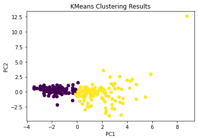

My name is Tom Waldin. I am a 25-year-old from Rotorua, New Zealand currently living in Otautahi (Christchurch) studying a Masters in Applied Data Science. My background is in Civil Engineering but I am seeking a career change to the data industry to better
align with my skills and passions. I love data and problem-solving, and outside of work, I am a passionate competitive rock climber. My data science skills are
showcased in the projects below and you can find more information about me as a climber on my Instagram.
 Tableau Dashboards - December 2023
Tableau Dashboards - December 2023

Data from the previous project is used to build a basic Tableau Dashboard, demostrating competence in BI reporting and Tableau. Additional dashboards can also be viewed here.
SQL Project #1 - December 2023

In this project SQL Server is used to explore global COVID 19 data, demonstrating basic SQL skills along with understanding of SSMS.
Institute of Data Capstone Project - April 2023
In this project, a problem is identified and a Machine Learning solution is modelled. The solution did not function as hoped but this project demonstrates the machine learning process.
Institute of Data Project #3 - February 2023

In this project, a K-Means clustering algorithm is used to categorise data points as diseased or benign.
Institute of Data Project #2 - January 2023
In this project, the presence of a Chronic Kidney Disease is predicted based on other health metrics using an sk-learn Linear Regression model.
Institute of Data Project #1 - December 2022
In this project, collision data from the New Zealand Transport Agency is explored, demonstrating skills in data cleaning, wrangling, and visualisation in Python with pandas and matplotlib.
University of Canterbury Honours Project - November 2021
This project was my introduction to data science and involved adapting a machine learning algorithm to identify patterns in time-series data.